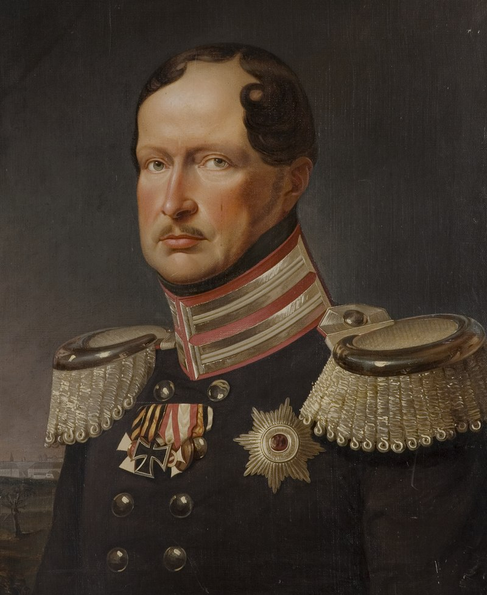
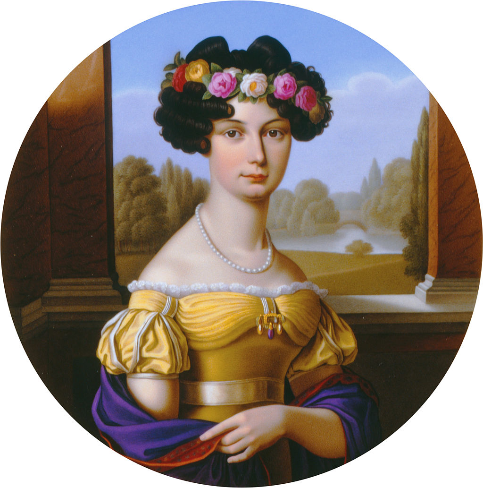
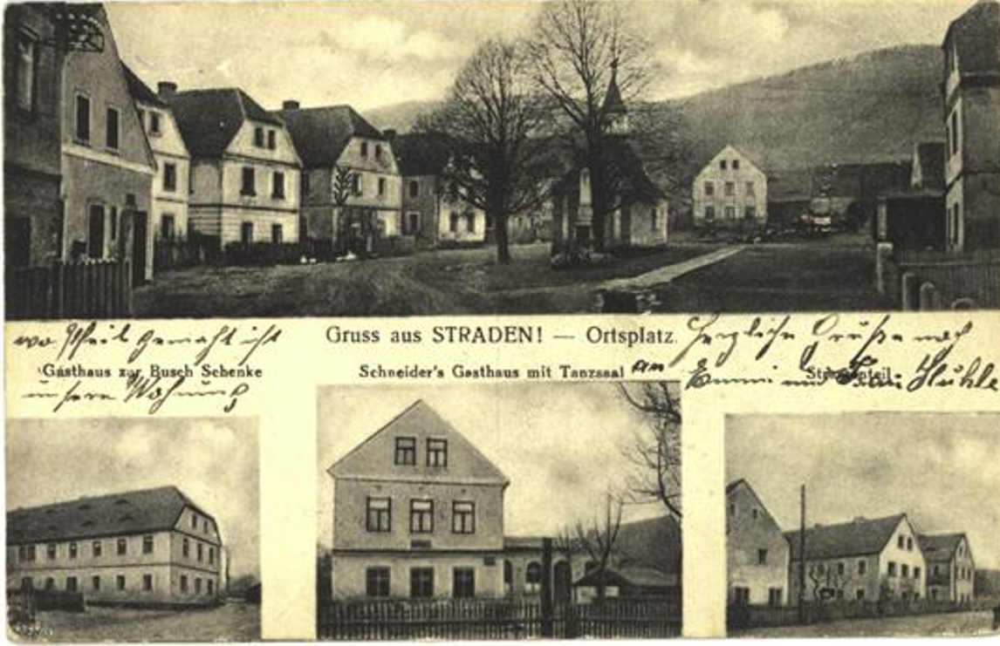
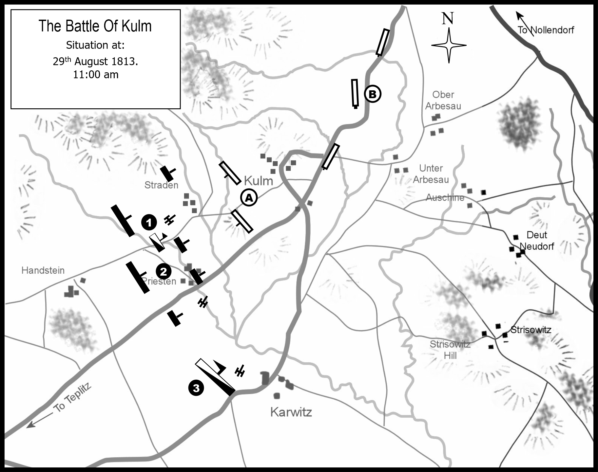
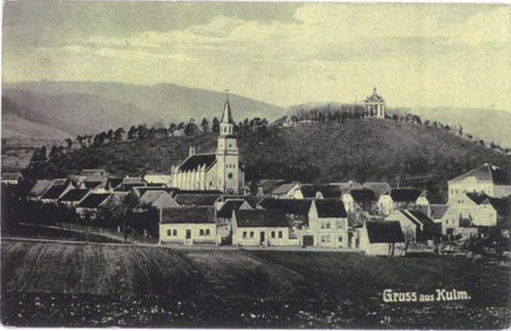
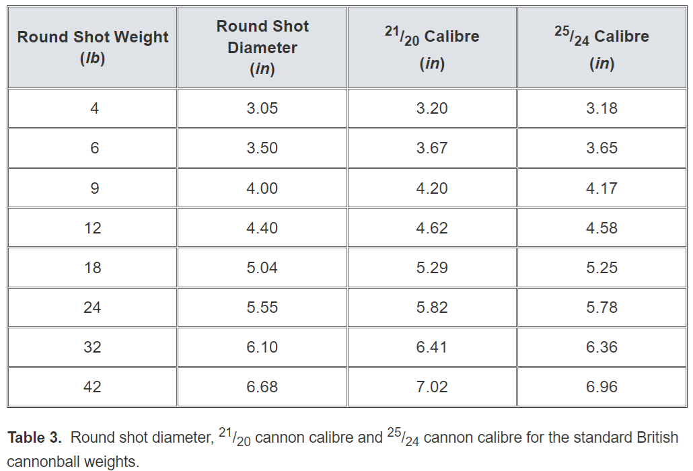

쿨름 전투 (3) - 국왕이 보낸 편지
게시: 2024-05-20T06:30:15+09:00
방담의 프랑스군이 테플리츠로 쳐들어오고 있으니 급히 피난하시라는 프란츠 1세의 편지를 받은 사람은 바로 프로이센 국왕 프리드리히 빌헬름이었습니다. 8월 27일, 다들 드레스덴에서 후퇴하자는데도 패배를 인정하지 않고 28일에도 한번 더 싸우자고 주장했던 프리드리히 빌헬름은 정작 후퇴가 결정되자 누구보다도 재빨리 말을 달려 안전한 후방인 테플리츠에 먼저 당도했었던 것입니다. 27일 밤까지도 드레스덴에 있던 양반이 28일 밤에는 남쪽으로 55km 떨어진 테플리츠에 와있었으니, 아마 엄청난 속도로 말을 달렸던 것 같습니다.

(1837년 경의 프리드리히 빌헬름의 모습입니다. 그는 처음에는 개혁 군주로서의 모습을 보여주기도 했으나, 결국 그건 똑똑한 왕비 루이자 덕분이었다는 것이 드러났고, 사랑했던 왕비 루이자가 죽은 이후 별로 영민한 모습을 보여주지는 못했습니다. 그렇다고 그가 여생을 수절한 것은 아니었고, 결국 다른 여성과 결혼을 하기는 했습니다. 이것도 인연이라면 인연인데, 그 두 번째 왕비인 아우구스트(Auguste von Harrach)를 1822년에 처음 만난 곳이 바로 여기 테플리츠였습니다.)

(프리드리히 빌헬름의 마음을 사로잡았던 아우구스트(Auguste von Harrach)는 그보다 30세 연하인 오스트리아 여성으로서 백작 가문의 딸이긴 했지만 국왕과 결혼할 수 있는 지위는 아니었다고 합니다. 게다가 아우구스트는 오스트리아인답게 카톨릭 여성이었으므로 프리드리히 빌헬름의 재혼은 비밀리에 이루어졌고, 이 결혼 사실이 나중에 알려졌을 때도 많은 프로이센 귀족들은 그 사실을 믿기 어려워했고 또 반대했다고 합니다. 특히 죽은 루이자 왕비의 가문에서 맹렬히 반대했습니다. 이 때문에 아우구스트는 왕실 의전에서도 사실상 말석을 차지하며 대우를 못 받았으며, 프리드리히 빌헬름이 사망했을 때도 그 병석을 끝까지 지켰지만 정작 장례식에는 간신히 허가를 받고 참석할 수 있었습니다. 다행인지 불행인지 이 두 번째 결혼에서는 자녀가 없었습니다.) 프리드리히 빌헬름은 이 청천벽력 같은 편지를 받아들고 재빨리 머리를 굴려보았습니다. 강력한 프랑스군이 곧 테플리츠에 들이닥친다는 것은 얼츠비어거 산맥의 주요 통로가 프랑스군 손에 떨어진다는 것이었는데, 여기 보헤미아에 있는 프로이센군은 자신을 호위하는 참모진 뿐, 대부분의 프로이센군은 아직 얼츠비어거 산맥 북쪽에 있었습니다. 이건 프로이센군 전체가 위기에 처했다는 뜻이었습니다. 뿐만 아니라 짜르 알렉산드르 본인도 아직 산맥 북쪽에 있었습니다. 프리드리히 빌헬름과는 달리 알렉산드르는 러시아 야전군과 함께 움직이고 있었던 것입니다. 아이언맨에게서 갑옷을 빼고 나면 천재 과학자이자 성공한 사업가인 토니 스타크가 남지만, 프로이센 국왕에게서 프로이센 야전군과 러시아의 짜르를 빼고 나면 모두들 비웃는 프리드리히 빌헬름이라는 홀아비만 남을 뿐이었습니다. 프리드리히 빌헬름은 정신이 번쩍 들었습니다.
(우리 모두 우리가 가진 것과 우리 자신을 혼동해서는 안 됩니다. 토니 스타크처럼 자신의 소유물이 아닌 자기 자신에 대해 자신감을 가질 수 있는 사람이 됩시다.) 그는 즉각 오스테르만에게 편지를 썼는데 그 내용은 얼츠비어거 산맥의 통로를 지키지 못하면 알렉산드르의 안전이 위협받게 되므로, 무슨 수를 써서라도 방담의 프랑스군을 막아야 한다는 것이었습니다. 그는 처음엔 이 편지를 그의 부관 나츠머(von Natzmer) 대령에게 들려 보냈으나, 그런 정도의 인물로는 오스테르만을 설득할 수 없다는 생각이 들었는지 곧 이어 같은 내용의 편지를 그의 수석 고문관이자 러시아군에게도 널리 알려진 인물인 크네제벡(von dem Knesebeck) 장군에게도 들려 오스테르만을 찾아가도록 했습니다. 프리드리히 빌헬름의 편지를 받아본 오스테르만도 상황을 심각하게 받아들였습니다. 그때까지도 전체적인 형세가 어떻게 돌아가는지 잘 모르고 있었던 오스테르만은 그제서야 알렉산드르도 바로 이 길을 통해 후퇴하고 있으며, 아직 산맥 북쪽에 남아있다는 것을 알게 되었기 때문이었습니다. 별다른 생각 없이 집결지인 테플리츠로 후퇴하던 그는 얼츠비어거 산맥 어디선가 방담을 막아서기로 하고 장소를 물색했습니다. 어차피 좁은 산길 중에서 고를 수 있는 곳은 많지 않았으므로 그는 산맥 끝자락 쿨름(Kulm, 체코어로 Chlumec 클루메츠) 마을 아래 쪽에 있는 3개의 산중 마을, 프리스텐(Priesten), 스트라덴(Straden), 카르비츠(Karwitz)를 방패로 삼아 방어진을 꾸미기로 했습니다. 이 3개 마을이 위치한 곳은 비교적 완만한 구릉지대로서 얼츠비어거 산맥에서 내려오는 경사에 북쪽부터 차례대로 스트라덴, 프리스텐, 카르비츠의 순서대로 늘어선 형국이었습니다. 얼츠비어거 산맥에서 내려오는 길은 북동쪽에서 남서쪽으로 향했기 때문에, 이 3개 마을을 연결한 선을 직각으로 관통하는 모양새였습니다. 이 마을들 일대에는 농가 빼고는 대단한 방어책이 될 지형이 있지는 않았고, 대부분이 목초지로 된 비탈길로서 군데군데 밭이 있는데 그 사이마다 불규칙하게 나무와 관목, 배수 도랑이 있는 정도였습니다. 농가 자체도 돌로 된 것이 아니라 목조라서 화재에 취약했습니다.

(이건 스트라덴(Straden) 마을의 모습이긴 한데 1813년이 아니라 1913년 당시의 모습입니다.) 오스테르만은 좌익인 스트라덴 마을에 에르몰로프(Ermolov) 장군을, 중앙의 프리스텐 마을에는 뷔르템베르크 대공을, 우익 카르비츠 마을에는 골리친(Dimitri Galitzin) 장군을 배치했습니다. 특히 우익이자 경사면에서 가장 낮은 마을인 카르비츠에 배치된 골리친의 부대는 거의 전원이 기병대였습니다. 이렇게 포진을 하기는 했으나, 이 시대 전투가 다 그러하듯 결국 승부는 머리수에서 나게 되어 있었습니다. 그런 점에서 오스테르만이 절대 불리했습니다. 오스테르만의 병력은 1만5천에 불과했는데, 방담은 3만5천에 가까웠습니다. 게다가 러시아군이 비록 마을을 점거하고는 있다고 해도 빈약한 목조 건물 뒤에 숨은 것에 불과했는데, 당시 전투에서 매우 중요한 요소였던 높은 지대를 차지하게 되는 것은 산맥에서 내려오는 길에 있던 방담이었습니다.

(8월 29일 오전 11시의 모습입니다. 왼쪽 아래가 러시아군, 오른쪽 위가 프랑스군입니다.) 8월 29일 오전 10시경, 드디어 방담의 제1군단 중 전위대가 쿨름 마을에 나타났습니다. 이들은 이 마을에 주둔하며 상황을 감시하고 있던 러시아 유격병들을 쫓아내었고, 쿨름 마을 주민들도 비명을 지르며 도망쳤습니다. 곧 이들은 쿨름 마을 자락에 8파운드 야포를 방열하고 저 아래 3개 마을을 중심으로 진을 친 러시아군을 향해 포격을 시작했고, 러시아군도 응사를 시작했습니다. 이 소동 속에 현장에 도착한 방담은 망원경으로 아래쪽 3개 마을과 함께, 자신이 내려온 위쪽 얼츠비어거 산맥의 산길을 앞뒤로 살폈습니다. 여태까지와는 달리 날씨가 활짝 개었기 때문에, 저 위쪽 산길에서 내려오고 있는 러시아군과 프로이센군의 모습도 잘 보였습니다. 후방에서 적의 대군이 접근하는데 앞에도 적군이 있다면 굉장히 걱정스러운 상황일텐데, 방담은 큰 걱정을 하지는 않았습니다. 후방에서 적군이 꾸역꾸역 몰려들고 있다는 것은 그들의 후방에 생시르와 마르몽이 맹추격을 하고 있다는 것을 뜻하는 것이라고 생각했기 때문이었습니다.

(쿨름의 풍경이긴 합니다만 이것도 1913년의 모습이니까 1813년과는 많이 다른 모습일 것입니다.) 당장 걱정해야 할 것은 먼저 눈 앞에 늘어선 오스테르만의 러시아군을 격파하는 것이었습니다. 좋은 점은 방담 자신의 병력이 2배 넘게 많다는 것과 함께 자신이 더 고지를 차지하고 있으므로 포격전에 있어서 단연코 유리한 입장이라는 것이었습니다. 그러나 나쁜 점도 있었습니다. 일단 자신에게는 큰 사과 정도 밖에 안 되는 포탄(직경 약 10cm)을 쏠 수 있는 8파운드 및 6파운드 야포 70여문 밖에 없었습니다. 원래는 더 위력적이던 12파운드 포도 몇 문 보유하고 있었으나, 럼부르크에서 피르나로 진격할 때 무슨 이유에서인지 그 12파운드 포들은 모두 드레스덴으로 가버렸었고, 덕분에 상당히 뒤처져 따라오고 있었던 것입니다. 또 문제가 있었습니다. 그 8파운드 포도 당장 다 여기에 있는 것이 아니라 후방에서 계속 내려오고 있는 중이었고, 더 중요한 것은 보병 부대들도 아직 얼츠비어거 산맥의 산길에서 부지런히 내려오고 있는 중이라는 것이었습니다.

(이건 영국군 포병대의 대포와 그 포탄 규격에 대한 표입니다. 9파운드 포의 경우 대포알 직경이 10.16cm이니까, 8파운드 포탄은 10cm 미만이었습니다.) 이미 진형을 갖춘 적군의 방어선에 대해 아군 병력을 한꺼번에 투입하지 않고 하나씩 둘씩 띄엄띄엄 보내는 축차투입은 원래 전술적으로 반드시 피해야 하는 것이었습니다. 방어선은 뚫지 못하고 쓸데없이 아군 병력만 소모시키는 결과를 낳을 뿐이었으니까요. 그러나 3만5천 전병력이 다 모이기를 기다릴 수도 없었습니다. 산자락이다보니 그런 대군을 모을 공간도 부족했지만, 무엇보다 저 먼 위쪽 산길에서 부지런히 내려오는 적군의 존재가 있기 때문이었습니다. 그러니 대충 대대 단위 연대 단위로라도 병력이 어느 정도 모이는 대로 당장 공격을 시작해야 했습니다. Source : The Life of Napoleon Bonaparte, by William Milligan Sloane Napoleon and the Struggle for Germany, by Leggiere, Michael V With Napoleon's Guns by Colonel Jean-Nicolas-Auguste Noël https://www.pinterest.co.uk/pin/143059725653536439/ https://napoleon-monuments.eu/Napoleon1er/Vandamme.htm https://alchetron.com/Battle-of-Kulm https://en.wikipedia.org/wiki/Battle_of_Kulm https://battlefieldanomalies.com/napoleonic-wars/the-battle-of-kulm/ https://en.wikipedia.org/wiki/Auguste_von_Harrach https://arc.id.au/Cannonballs.html